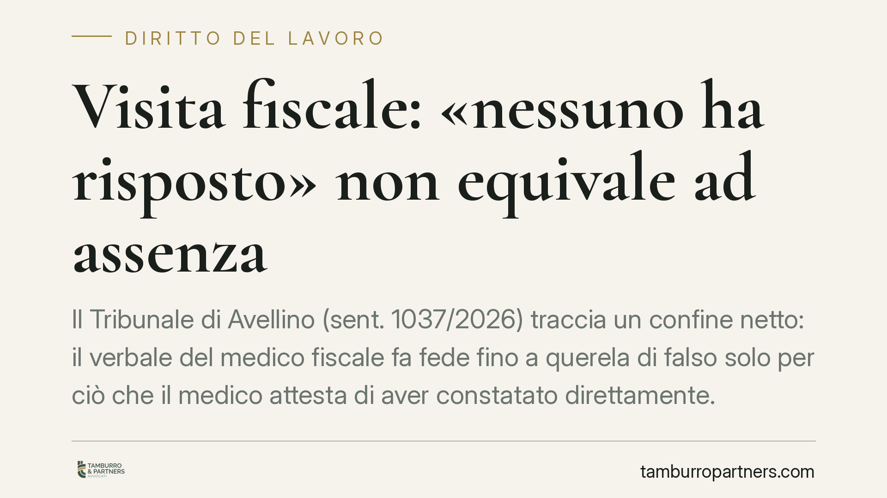

Visita fiscale: «nessuno ha risposto» non equivale ad assenza
Il Tribunale di Avellino (sent. 1037/2026) traccia un confine netto: il verbale del medico fiscale fa fede fino a querela di falso solo per ciò che il medico attesta di aver constatato direttamente. Se annota «nessuno ha risposto», non prova che il lavoratore fosse fuori casa. Una distinzione che cambia le carte in tavola nei procedimenti disciplinari per assenza alla visita di controllo.

Il caso
Un lavoratore in malattia riceve la visita del medico fiscale INPS. Il medico, al domicilio, non ottiene risposta e verbalizza la circostanza. Ne segue la contestazione dell'assenza, con le conseguenze che la normativa ricollega al mancato reperimento: perdita del trattamento economico di malattia per i giorni interessati e possibile rilievo disciplinare.
Il lavoratore impugna e sostiene di essere stato regolarmente in casa. Il Tribunale di Avellino, Sezione Lavoro, gli dà ragione su un punto decisivo: l'annotazione «nessuno ha risposto» non prova l'assenza del dipendente dall'abitazione.
Inquadramento normativo
Il nodo è l'efficacia probatoria dell'atto pubblico, disciplinata dall'art. 2700 del Codice civile. La norma stabilisce che l'atto pubblico fa piena prova, fino a querela di falso, della provenienza dal pubblico ufficiale che lo ha formato e dei fatti che il pubblico ufficiale attesta avvenuti in sua presenza o da lui compiuti.
La querela di falso è lo strumento processuale con cui si contesta la veridicità di un atto pubblico: un procedimento gravoso, che richiede di dimostrare la falsità di quanto il pubblico ufficiale ha dichiarato di aver percepito direttamente.
Il punto è proprio questo. Il verbale del medico fiscale copre, con quell'efficacia rafforzata, solo i fatti che il medico ha constatato di persona. Il medico può attestare di essersi recato a un dato indirizzo, a una data ora, di avere suonato e di non aver ricevuto risposta. Tutto questo è coperto dall'art. 2700 c.c.
Ciò che il medico non può attestare, perché non lo ha percepito, è che il lavoratore si trovasse altrove. L'assenza fisica del dipendente dall'abitazione non è un fatto constatato: è una deduzione. E una deduzione non gode della fede privilegiata dell'atto pubblico.
Implicazioni pratiche
La differenza è sostanziale per chiunque riceva una contestazione per mancato reperimento alla visita fiscale.
Se il verbale si limita a riportare che «nessuno ha risposto», il lavoratore non è costretto a proporre querela di falso. Può contestare l'assenza con i normali mezzi di prova: testimonianze, documentazione, elementi che dimostrino la propria presenza al domicilio nella fascia oraria di reperibilità.
Le cause del mancato contatto possono essere molteplici e legittime: un citofono guasto, un errore sull'indirizzo o sull'interno, il lavoratore che non ha udito il suono per le condizioni di salute o per la collocazione della stanza. Nessuna di queste circostanze implica un'assenza ingiustificata.
Il datore di lavoro e l'INPS, dal canto loro, non possono fondare automaticamente la sanzione sul solo dato del mancato riscontro alla porta. Spetta a chi contesta l'assenza provarla, quando il lavoratore offra elementi concreti della propria presenza.
Resta fermo l'obbligo di rendersi effettivamente reperibili nelle fasce orarie previste e di garantire al medico la possibilità di eseguire il controllo. La pronuncia non legittima comportamenti elusivi: distingue soltanto il fatto attestato dalla conseguenza presunta.
Cosa fare in concreto
- Verifica il contenuto esatto del verbale. Controlla se il medico ha attestato un'assenza constatata o si è limitato a scrivere che nessuno ha risposto. La formulazione cambia l'onere probatorio.
- Raccogli subito le prove della tua presenza. Testimoni conviventi o vicini, eventuali registrazioni, documentazione dell'orario in cui ti trovavi in casa: gli elementi vanno conservati tempestivamente.
- Segnala per iscritto eventuali anomalie. Citofono non funzionante, interno errato, indirizzo impreciso: comunicali con mezzo tracciabile a INPS e datore di lavoro.
- Non dare per scontata la querela di falso. Se il verbale non attesta l'assenza, puoi difenderti con i mezzi di prova ordinari, più agevoli e meno onerosi.
- Rispetta rigorosamente le fasce di reperibilità. La miglior difesa resta la presenza effettiva e documentabile al domicilio negli orari previsti.
Un principio consolidato
La decisione del Tribunale di Avellino si inserisce in un orientamento che valorizza la precisione dell'atto pubblico e i suoi confini. L'art. 2700 c.c. protegge i fatti percepiti, non le conclusioni tratte da un mancato riscontro. Consigliamo di leggere ogni verbale con attenzione a questa distinzione, prima di assumere decisioni difensive.
Disclaimer
Contributo informativo a cura di Tamburro & Partners - Avv. Giuseppe Tamburro. Non costituisce parere legale.
Ogni storia di lavoro ha i suoi tempi.
Se gestisci HR e vuoi un confronto su contenzioso, ispezioni o licenziamenti, scrivi allo studio. Ti rispondiamo entro un giorno lavorativo.